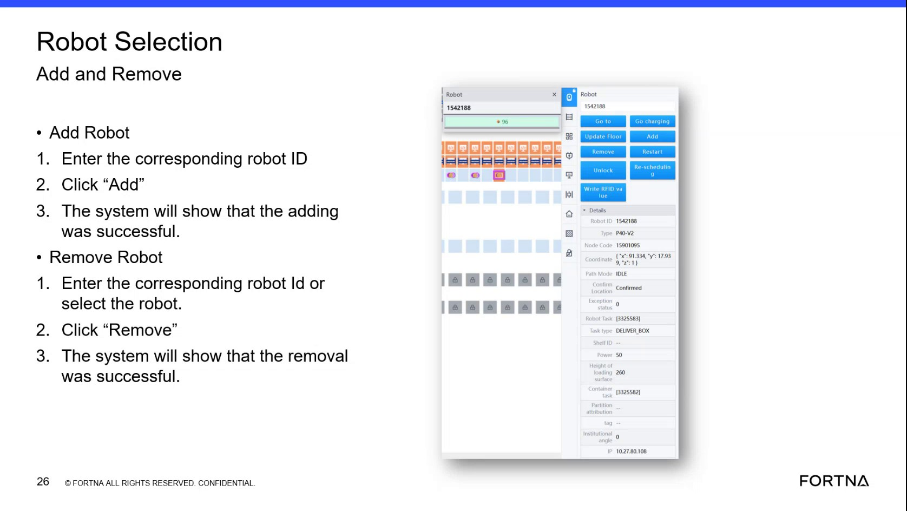

| Procedure ID | proc_add_or_remove_robot_in_geek_plus_rms_robot_selection_web_view_v1 |
|---|---|
| Title | Add or Remove a Robot in the Geek Plus RMS Robot Selection Web View |
| Procedure Type | operation |
| Primary Role | L1_support |
| Support Safe | Yes |
| Capability Tags | device_roster_state |
| Access Surface | rms_ui |
| Audience Roles | L1_support |
| Failure Pattern Tags | None |
| Validation Status | needs_sme_review |
| Merge Status | source_finalized |
Use the Geek Plus RMS Robot Selection web view to add a robot by robot ID or remove an existing robot, and confirm success messages after each action.
When you need to manage the Geek Plus RMS robot roster using the Robot Selection Add/Remove workflow and verify the on-screen success confirmations.

Responsible role: L1_support
Instruction:
From an OT network device, open the Geek Plus RMS web application using the site/RMS address. If you are supporting remotely, ensure you are authorized to use the UPS VPN through Zscaler and can reach the site/RMS address.
Expected result:
The Geek Plus RMS web application loads successfully and you can navigate to the Robot Selection screen.
Stop or Escalate If:
Responsible role: L1_support
Instruction:
In the Geek Plus RMS web application, navigate to the Robot Selection screen that contains the Robot ID entry field and the Add Robot and Remove Robot controls.
Expected result:
The Robot Selection screen is visible with the Robot ID entry field and the Add and Remove controls.
Responsible role: L1_support
Instruction:
In the Robot ID entry field, enter the corresponding robot ID. (If the robot is already introduced, partial numeric entry may surface matching robots.) Click the "Add" button.
Expected result:
A confirmation message appears indicating the robot was added successfully ("adding was successful" / "robot was added successfully").
Stop or Escalate If:
Responsible role: L1_support
Instruction:
Enter the corresponding robot ID in the Robot ID entry field or select the robot from the list shown for that ID. Click the "Remove" button.
Expected result:
A confirmation message appears indicating the robot was removed successfully ("removal was successful" / "remove what was successful").
Stop or Escalate If: